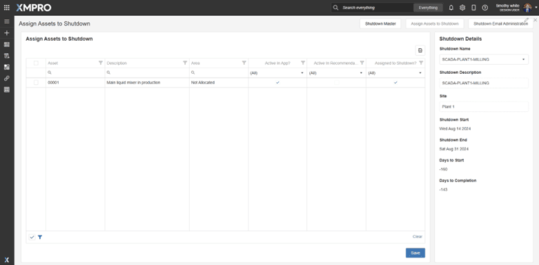

Unified Recommendation Alert Management
Design Patterns for APM Capabilities and Recommendation Alerts 2025 v3.pdf
Glossary
| Acronym | Description |
|---|---|
| ADT | Asset Digital Twin |
| APM | Asset Performance Management |
| CBC | Composable Business Capabilities |
| CMMS | Computerized Maintenance Management System |
| EAM | Enterprise Asset Management |
| EWMA | Exponentially Weighted Moving Average |
| LOESS | Locally estimated scatterplot smoothing |
| LOWESS | Locally weighted scatterplot smoothing |
| PBC | Packaged Business Capabilities |
| RPN | Risk Priority Number |
Audience
The readers who will find this documentation most useful will have a working knowledge of XMPro and use XMPro to address asset performance business problems. It is suggested that new users of XMPro should workshop their requirements with their XMPro partners. It is useful to emphasise that XMPro is an Intelligent Business Operations Solution (iBOS).
Introduction
This document has arisen from the work done with partners and seeks to align some APM capabilities pertaining to Recommendation Alert Management with XMPro configurations based on standard XMPro capability. For ease of use we have labelled those configurations 'Design Patterns".
We call these patterns 'Composable Business Capabilities'. (CBC[1]) The customer will need to adapt the design pattern to their own situation. Some of the Design Patterns have been further developed and are available as Apps in our GitHub[2] – these are enabled 'Packaged Business Capabilities' (PBC)[3].
[1] Gartner Reference Model for Intelligent Composable Business Applications
[2] https://xmpro.github.io/Blueprints-Accelerators-Patterns/
[3] Gartner Reference Model for Intelligent Composable Business Applications
Summary
| High Level Summarization | APM Capability | Associated Design Pattern | Application Description |
|---|---|---|---|
| Management of Prioritized Recommendation Alerts | Unified view of Recommendation Alerts, reliability health and risk scores Asset and alert rating - Asset criticality - Recommendation severity - Recommendation alert priority Recommendation alert management Priority map of asset criticality |
Strategy and Aggregator Pattern | - Recommendation Alert Scoring (including Asset Criticality) - Workbench - Asset Analysis meta tags - Recommendation Analysis meta tags - Shutdown |
| Prioritization of Assets subject to open prioritized Recommendation Alerts | Unified view of Recommendation Alerts by asset Asset and alert rating - Asset criticality - Recommendation severity - Recommendation alert priority Priority map of asset criticality |
Strategy and Aggregator Pattern | - Recommendation Alert Scoring (including Asset Criticality) - Asset Analysis meta tags |
| Management of Recommendation Alerts during Shutdowns | Capability to suspend alerts during a Shutdown process. | State and Observer Pattern | - Shutdown |
| Ability to track Work Orders arising from Recommendation Alerts | Reliability-Centered Maintenance (RCM) and Work Order Management | Aggregator Pattern | - Work Bench - Configured Recommendation Alert page |
| Categorization of Recommendation Alerts | Recommendation alert management | Decorator Pattern | - Recommendation Analysis meta tags |
| Categorization of Assets | Asset hierarchy will cater for user defined categorization. Asset hierarchy capability within the system and not rely on the historian asset hierarchies. |
Decorator Pattern | - Asset Analysis meta tags |
Part 1: APM Capability
1. Management of Prioritized Recommendation Alerts and Prioritized Assets subject to Recommendation Alerts
APM capabilities
- Unified view of Recommendation Alerts
- Asset and alert rating
- Asset criticality
- Recommendation severity
- Recommendation alert priority
- Recommendation alert management
- Priority map of asset criticality
Design Pattern
- Recommendation alert scoring – Strategy Pattern
- Workbench – Aggregator Pattern
- Asset Analysis Meta Tags – Decorator Pattern
- Recommendation Analysis Meta Tags – Decorator Pattern
APM requirements
- A number of the requirements are addressed out of the box. Design patterns can be used to further enhance the systems capability.
- Unified view
- The APM system will provide a unified view of the reliability health and risk scores through integration of asset strategy, condition monitoring, analytics, and APM data systems to measure cost, failure rates and compliance metrics.
- Priority
- The APM system will provide a standard process for defining the criticality of assets.
- The APM system will provide a standard process for defining the Risk Priority Number (RPN) / severity score of recommendation alerts.
- The APM system will provide a standard process for prioritising recommendation alerts by the measure of an alert's Risk Priority Number (RPN) and an asset criticality score.
- The APM system will provide a modifiable risk matrix that can be adjusted to the company's definition of risk.
- Recommendation management
- The APM system will provide the ability to create recommendations within each area of functionality that can be associated to an equipment ID or functional location.
- The APM system will provide means to track and follow up recommendations from several hierarchical levels perspective in the organization (site, areas, units, system, and assets).
- The APM system can provide the ability to schedule an alert email message to be sent to the person responsible for ensuring that the recommendation is addressed.
- The APM system will provide concise reporting and alerting capability to track outstanding and past-due recommendations.
- The APM system will provide the ability to initiate recommendations for further planning and execution.
2. Management of Recommendation Alerts during Shutdowns
The Shutdown Management App uses the State and Observer Patterns to manage preplanned shutdowns effectively. During a shutdown, the app transitions assets to a "Disabled" state using the State Pattern, silencing recommendations and preventing the creation of equipment alerts based on anomalies. The Observer Pattern ensures stakeholders are notified about the shutdown schedule via email, enhancing communication and coordination. This approach maintains system integrity and operational efficiency by ensuring that no unnecessary alerts are generated during maintenance periods.
APM capability
- Capability to suspend alerts during a Shutdown process.
Associated Design Pattern
- Shutdown – Object, Observer patterns
APM requirements
- A number of the requirements are addressed out of the box. However, the design patterns can be used to enhance the systems capability.
- The APM system will provide the capability to automatically suspend generate alerts during a planned shutdown / start up.
- The APM system will provide the capability to amend planned shutdown and startup times for a planned shutdown / start up.
- The APM system will optionally categorize, and store alerts generated during the shutdown and start up procedures.
3. Ability to track Work Orders arising from Recommendation Alerts
APM capability
- Paper free integration to CMMS for work order process.
Associated Design Pattern
- Work Bench – Aggregator Pattern
- Custom Recommendation Alert page – Aggregator Pattern
APM requirements
- The APM system will provide linkage from the analysis of recommendation alerts to the resulting work order.
- The APM system will provide integration to a maintenance management / paper free work order process.
4. Categorization of Recommendation Alerts
A Recommendation Meta Tag App uses the Decorator Pattern to dynamically enhance asset data without altering the original schema. By assigning meta tags such as performance metrics, maintenance recommendations, and operational statuses to assets, the app enriches contextual data, enabling more informed decision-making. This approach allows for flexible and scalable data enhancement, improving predictive maintenance, performance monitoring, and overall asset management within the APM framework.
APM capability
- Ability to contextualize and categorizes alerts by customizable metrics for targeted filtering.
Design Pattern
- Workbench – Aggregator Pattern
- Recommendation Analysis meta tags – Decorator Pattern
APM requirements
- A number of the requirements are addressed out of the box. However, the design patterns can be used to enhance the systems capability.
- Recommendation management
- The APM system will provide the capability to filter and categorize alerts, and by fault mechanism.
5. Categorization of Assets
An Asset Master Hierarchy App utilizes the Decorator Pattern to dynamically enhance the hierarchical representation of assets without altering the original asset structure. This app assigns hierarchical meta tags, such as parent-child relationships, asset dependencies, and location mappings to assets, for more informed decision-making.
APM capability
- Asset hierarchy will cater for user defined categorization.
- Asset hierarchy capability within the system and not rely on the historian asset hierarchies. Associated
Associated Design Pattern
- Asset Analysis meta tags – Decorator Pattern
APM requirements
- A number of the requirements are addressed out of the box. However, design patterns can be used to enhance the systems capability.
- Recommendation management
- The APM system will provide the capability to filter and categorize assets.
- The APM system will provide the capability to allocate a criticality score to each asset.
Part 2: XMPro configurations as Design Patterns
This section articulates how using XMPro capabilities the APM requirement is addressed. This assembly of configured XMPro capability is the foundation for a low code XMPro App.
The authors have used standard XMPro functionality to create the various Design patterns. This Practice Note is primarily concerned with a unified view of prioritized Recommendation Alerts. The most popular Design Pattern is definitely 'Work Bench', but we recommend that the other Design Patterns should be reviewed and considered.
1. Design Pattern: Work Bench
The objective of the Recommendation Alerts Workbench design pattern is to allow for the prioritization, categorization and filtering of alerts. The workbench addresses the following APM capabilities:
- Unified view of Recommendation Alerts, reliability health and risk scores
- Asset and alert rating
- Asset criticality
- Recommendation severity
- Recommendation alert priority
- Recommendation alert management
- Priority map of asset criticality
- Generic querying, reporting, graphing, and searching capabilities for all asset types, alert histories, and work orders.
Users have a high-level unified view to assist in their workflow process by providing the ability to see XMPro alerts filtered by criticality and status as well as associated WO's.
In the above example the first three tabs focus on the status of Recommendation Alerts – Open, Assigned without WO and Assigned with WO. The landing page alert tabs will include all unassigned alerts. The last three tabs focus on linked WO and the appropriate status; Open, Complete WO and Closed WO. The filtering, tabs, actions, and various status would be set for your circumstance.
The aim is to give the user situational awareness to all the elements of the Recommendation Alert. The above example page provides the relevant information on an alert to allow users to:
- See a holistic view of a piece of equipment (ability to see all alerts related to that asset)
- Any associated discussion which may provide insights into investigation and actions take
- Data at time of alert triggering
- Relevant metrics (schematics, score history)
In the Figure 3 this shows an example of assigning many Alerts to one WO.
This page shows all open work orders and associated Recommendation Alerts.

Additionally, users can create custom recommendation pages which display relevant data to the alert including:
- Other alerts associated with the Asset ID
- Metadata associated with the alert
- Ability to tie a WO/WR to the alert
- All WO/WR available
2. Design Pattern: Asset Prioritization
Asset Prioritization= (Severity (Recommendation Alert Setting) X Occurrence X Detectability) X Asset Criticality settings (assigned at Asset level).
- Severity set at Recommendation level with Recommendation Category factor, Recommendation Factor and Recommendation Rule Factor.
- Occurrence is measured in the Data Stream and updated with the 'Run Recommendation' agent. Note: For calculating Occurrences with tags, log on all occurrences should be enabled for your recommendations Occurrence can be calculated with two methods which is based on the data. A) Event Frames B) Tags Refer to Appendix A
Note
An occurrence may not necessarily correspond to a new Recommendation Alert. For example, when polling OSI PI tags, the current occurrence might be part of an existing fault that previously triggered an open Recommendation Alert, or it could trigger a new alert if none is currently open. In such cases, an occurrence count is used to indicate the number of polling intervals during which the alert logic is met. Conversely, if the Data Stream is ingesting OSI Event Frames (EF), then each new EF is treated as a separate occurrence. This distinction is vital for accurately defining the measure for occurrence count.
- Detectability is omitted as we assume that the Failure Mode is detectable if a recommendation rule exists. Default score = 1
- Asset Criticality is assigned at an Asset level in the Asset Master, Asset Hierarchy or Asset meta tags. Ideally, this is pulled from a source system to match the existing criticalities you are utilizing for other reliability activities. If this is unavailable, this can be stored in XMPro. XMPro capability on Recommendation scoring [4].
Note
We suggest the initial default values be 1. We would expect that there will be several cycles as the various score settings are fine tuned.
[4] How is the scoring calculated
3. Design Pattern: Asset Shutdown
The purpose of the app is to allow users to silence alert generation for specific assets in recommendations while still maintaining the published state of the recommendation. This activation/deactivation will take place automatically based on predefined start/stop dates. The application will also notify users when the shutdown will start and end to determine if a modification is necessary and as a verification step.
In the examples below we have explained the concept detailing a shutdown by asset. However, we strongly suggest that the first iteration allows for shutdown by a level in the asset hierarchy or some other mechanism the sites may have. Example you may wish to shut assets within a certain location.
If your organization analyses Recommendation Alerts across the organization, the analysis is not clouded by the need to omit alerts triggered during a shutdown and the subsequent start up.
This page will be used to create new shutdowns and edit existing shutdowns. For existing shutdowns, assigned assets will appear below the shutdown grid.

This page will be used to assign Assets to an existing shutdown. The "Previously Selected" column tells shutdown planners what Assets are already assigned to a shutdown.
4. Design Pattern: Recommendation Meta Tags Administration
The Recommendation Meta Tag Application enriches asset data by dynamically adding meta tags with maintenance recommendations, operational statuses, and performance metrics. This contextual information aids in making informed maintenance decisions and optimizing asset performance. By enhancing data without altering the original asset schema, the application supports predictive maintenance and improves overall asset management, leading to increased operational efficiency and reliability.
In this page we have opted to distinguish between 'Not Allocated', or 'Not Reviewed'.
'Not Allocated' means that the Meta Tag is not relevant to the Recommendation (In the above this is the preferred allocation as not blank) and 'Not Reviewed' means that no selection has been decided for this asset.
In the page above we have assigned Meta Tag Values to a Recommendation.
This page creates or edits the Meta Tag Values. The Meta Tag column will populate a dropdown of existing options from the list of available options Created on the Meta Tags page.
This page contains a grid where the user can create or edit the Meta Tags.
5. Design Pattern: Asset Meta Tags Administration
The Asset Meta Tag Application enhances asset management by dynamically adding meta tags to asset data. These tags include performance metrics, maintenance recommendations, and operational statuses, providing enriched contextual information. This additional data helps in predictive maintenance, performance monitoring, and informed decision-making without altering the original asset schema. The application enables better tracking and management of assets, leading to improved operational efficiency and reliability.
In this page we have opted to distinguish between 'Not Allocated', or 'Not Reviewed'.
'Not Allocated' means that the Meta Tag is not relevant to the Asset (A preferred allocation rather than blank) and 'Not Reviewed' means that no selection has been made for this asset.
This page will be used to assign Meta Tag Values to an Asset. Each Meta Tag will populate a row with the corresponding Meta Tag Values for selection from the dropdown.
This page contains a grid where the user can create or edit the Meta Tag Values. The Meta Tag column will populate a dropdown of existing options from the list of available options Created on the Meta Tags page.
This page contains a grid where the user can create or edit the Meta Tags.
Appendix 1 – Calculation of Recommendation Alert and Asset Priority Scores
Definitions
| Term | Description |
|---|---|
| Asset Criticality Score | Asset Criticality is a value (1-10) you set for your site assets based on how critical those site assets are to you. A value of 1 indicates the lowest level of importance, while a value of 10 is absolutely critical to your company. Asset Criticality is assigned at an Asset level in the Asset Master, Asset Hierarchy, or Asset meta tags. |
| Asset Priority Score | Asset Criticality * Weighted Risk Priority Number for all applicable Recommendation Alerts |
| Recommendation Alert Priority Score | Risk Priority Number * Asset Criticality |
| Risk Priority Number (RPN) | Severity * Detectability * Occurrence |
| Severity | The severity of the failure mode is rated on a scale from 1 (low) to 1000 (high). A high severity rating indicates severe risk. Recommendation Category Factor * Recommendation Factor * Recommendation Rule Factor. |
| Detectability | Set at 1 as all asset conditions measured are detectable |
| Occurrence | The logarithmic function Frequency = 1/a * logb(mx) + c to measuring operational alarms in a system. |
1. Approach to Scoring Occurrence for an individual Recommendation Alert
1.1 Event Frames (Logarithmic Formula)
Event Frames monitor all occurrences unlike the Recommendation Alerts where the occurrence is measured at the polling. Consequently, a Recommendation Alert does not equal all occurrences.
Outcome – Recommendation Alert Priority Score
Formula:
\(Recommendation Alert Priority Score = (Severity * Occurrence* X Detectability) * Asset Criticality settings (assigned at Asset level)\)
Severity & Detectability as stated in 'Definitions' above.
Occurrence is a measure of the count that the recommendation logic is met. We use the logarithmic function to calculate 'Occurrence'. The logarithmic function to measuring operational alarms in a system. \(Occurance= 1/a* 〖log〗_b (mx)+c\) Where:
- x is the number of alerts for that specific alert type
- a is a scaling factor
- m is the multiplier for x
- c is a vertical shift
Examples for each constant:
- x: Number of alerts in the last x hours [x is a global parameter] Let's say x = 100 alerts were recorded in the past 24 hours.
- a: Scaling factor for the overall frequency Example: a = 0.5 A smaller value of 'a' will increase the overall frequency, making the system more sensitive to changes in the number of alerts.
- b: Base of the logarithm Example: b = 10 Using base 10 is common and makes the scale easy to interpret. Each order of magnitude increase in alerts will correspond to a unit increase in the log value.
- m: Multiplier for x (alert count) Example: m = 0.1 This scales down the number of alerts. If m < 1, it reduces the impact of large numbers of alerts, preventing the frequency from growing too quickly.
- c: Vertical shift Example: c = 3 This adds a constant to the result, effectively setting a minimum frequency even when there are very few alerts.
The logarithmic function helps to compress the range of occurrence values, preventing the RPN from growing too quickly for assets with very frequent alerts. Adjusting the parameters a, b, m, and c allows you to fine-tune the sensitivity of the occurrence calculation to best fit your risk assessment needs.
The formula can be enhanced to incorporate multiple variables. Example for a pump \(1/a * logb(mx * V * T * F * E) + c\)
Where:
- x = number of alerts in the last 24 hours
- V = vibration level factor
- T = temperature factor
- F = flow rate factor
- E = efficiency metric factor
1.2 Tags (Using time decay)
In the situation where Recommendation Alerts are created from polling asset tags, we normalize the occurrence count with a time decay function.
Severity & Detectability as stated in 'Definitions' above.
Occurrence is a measure of the count that the recommendation logic is met.
This approach accounts for two factors:
- The gradual decrease in an alert's significance over time
- The varying sampling frequencies across different data sources.
The resulting score reflects both the event's severity and its temporal relevance. The following equation can be used:
\(Occurrence= n* e ^ (-λt)\)
Where:
- \(λ\) is the decay rate
- \(t\) is the duration from the current time
- \(n\) is percentage of time an alert was open normalized
To calculate \(n\), use the following ratio
For example, we have two alerts open.
Alert 1:
- \(λ\) is .01
- \(t\) is every 24 hours
- \(n\) is percentage of time an alert was open normalized
Polling Rate = 12 hours Polling Duration = 24 hours Total Polling Time Frame = 3 Days
Alert 2:
- \(λ\) is .01
- \(t\) is every 24 hours
- \(n\) is percentage of time an alert was open normalized
Polling Rate = 24 hours Polling Duration = 24 hours Total Polling Time Frame = 3 Days
The duration in this scenario is set largest duration between polls (in this case 24 hours). If we had the following data for the alerts:
| Days | 1 | 1 | 2 | 2 | 3 | 3 |
|---|---|---|---|---|---|---|
| Alert 1 Poll | x | x | x | x | 0 | x |
| Alert 2 Poll | - | x | - | x | - | x |
In the grid above, "x" is an occurrence, "0" is no occurrence, and "–" indicates no poll.
To normalize so we would get the same number of time frames to calculate occurrence for, we would divide the number of total occurrences in each time frame by the number of potential occurrences
| Days | Alert 1 | Alert 2 | Time (hrs) | Alert 1 Occ. Score by Day | Alert 2 Occ. Score by Day |
|---|---|---|---|---|---|
| 1 | 2/2 | 1/1 | 48 | .618 | .618 |
| 2 | 2/2 | 1/1 | 24 | .786 | .786 |
| 3 | 1/2 | 1/1 | 0 | .5 | 1 |
| Total | 1.90 | 2.40 |
Alert 2, which occurs at every interval, has an occurrence score of 2.4 with an aggressive decay factor. While the most recent occurrence receives the maximum score of 1.0, the high decay factor significantly reduces the weight of occurrences from three days ago.
For comparison, we applied the same decay factor to Alert 1. However, Alert 1's latest value was normalized to 0.5 since the condition was true for only half of the potential instances. This normalization reduced Alert 1's occurrence score to 1.90, compared to Alert 2's score of 2.4. The difference in scores demonstrates how recent occurrences have a stronger influence than older ones.
The combination of normalization and decay rates effectively handles both varying polling frequencies and the diminishing relevance of historical occurrences
Scores can also be adjusted based on other factors.
Below shows an example based on the type of alert and how different decay rates affect the scores if decay rates are based on recommendations.
| Hours Elapsed | Critical (rate: 0.05) | Vibration (rate: 0.1) | Temperature (rate: 0.3) | Pressure (rate: 0.5) | Transient (rate: 0.8) |
|---|---|---|---|---|---|
| 0 | 1.000 | 1.000 | 1.000 | 1.000 | 1.000 |
| 1 | 0.951 | 0.905 | 0.741 | 0.607 | 0.449 |
| 2 | 0.905 | 0.819 | 0.549 | 0.368 | 0.202 |
| 4 | 0.819 | 0.670 | 0.301 | 0.135 | 0.041 |
| 8 | 0.670 | 0.449 | 0.091 | 0.018 | 0.002 |
| 12 | 0.549 | 0.301 | 0.027 | 0.002 | 0.000 |
| 24 | 0.301 | 0.091 | 0.001 | 0.000 | 0.000 |
Decay rates can also be adjusted based on an asset's criticality. For example:
- Critical assets: Use lower decay rates (0.05 - 0.1)
- Non-critical assets: Use higher decay rates (0.3 - 0.5)
- Maintenance-dependent alerts: Use very low decay rates (0.01 - 0.05)
2. Priority by Asset for Multiple Recommendation Alert Types
Outcome – Priority score by Asset
For the various recommendation alert types for an asset, we need to calculate individual occurrence scores for each Recommendation Alert type and then aggregate them into a single asset-level occurrence score. This approach ensures that we consider all alert types while maintaining a single score for use in the RPN (Risk Priority Number) calculation.
Step 1: Calculate Individual Occurrence Scores
Calculated as per Section 1 or Section 2
Step 2: Aggregate Occurrence Scores
After calculating individual occurrence scores, aggregate them into a single asset-level score. Here are three methods to consider:
- Maximum Method: Asset Occurrence = max(O₁, O₂, ..., Oₙ) Where O₁, O₂, etc. are occurrence scores for each alert type.
- Weighted Average: (Recommended) Asset Occurrence = (w₁ * O₁ + w₂ * O₂ + ... + wₙ * Oₙ) / (w₁ + w₂ + ... + wₙ) Where w₁, w₂, etc. are weights assigned to each alert type based on their importance.
- Logarithmic Sum: Asset Occurrence = exp(log(O₁) + log(O₂) + ... + log(Oₙ))
Weighted Average is recommended as the preferred method. the method that best fits your system's requirements and risk assessment strategy.
Step 3: Normalize the Score
Ensure the final asset occurrence score falls within your desired range (e.g., 1-10) by applying appropriate scaling or normalization.
Step 4: Integrate with RPN Calculation for each asset
Use this aggregated asset occurrence score in your RPN formula:
RPN = Severity * Asset Occurrence * Detectability
Example Calculation using Event Frames.
Refer Section 1.2 for the calculation of occurrence for tags.
Let's consider an asset with two alert types:
Alert Type 1:
- x₁ = 100 alerts
- a = 0.5, m = 0.1, c = 3 Occurrence₁ = 1/0.5 * log₂(0.1 * 100) + 3 = 9.64
Alert Type 2:
- x₂ = 50 alerts
- a = 0.5, m = 0.2, c = 3 Occurrence₂ = 1/0.5 * log₂(0.2 * 50) + 3 = 9.32
Using the weighted average method with w₁ = 1.2 and w₂ = 1: Asset Occurrence = (1.2 * 9.64 + 1 * 9.32) / (1.2 + 1) = 9.50
Step 5: Calculate the Asset Priority
Asset Priority = Asset Criticality * RPN
Considerations
- Address assets with no alerts of a particular type by setting a minimum occurrence value (e.g., 1) or using zero, depending on your risk assessment strategy.
- The 'Run Recommendation' agent should update the 'x' values (number of alerts) for each alert type.
- The logarithmic function moderates the growth of the occurrence score for assets with frequent alerts while still capturing the significance of alert frequency. Regularly review and adjust the parameters (a, m, c, and weights) to ensure the system accurately reflects your organization's risk priorities.
Appendix 2 - Analysis of Risk Priority Number (RPN) Implementation in Asset Performance Management: Limitations and Opportunities
Abstract
We examine the theoretical foundations and practical limitations of Risk Priority Number (RPN) implementation in Asset Performance Management (APM) systems. While RPN serves as a cornerstone metric in failure mode and effects analysis (FMEA), significant challenges emerge in its practical application. Through critical analysis of current literature and industry practices, this study identifies key limitations in RPN methodology and proposes potential enhancements for more effective risk assessment in industrial settings.
Introduction
Risk Priority Number (RPN) has long served as a fundamental tool in risk assessment and failure mode analysis. However, as industrial systems grow in complexity and the demands for precise risk quantification increase, the traditional RPN methodology faces several challenges that warrant careful examination. This paper aims to critically analyse these limitations and explore potential solutions for modern industrial applications.
1. Theoretical Framework
1.1 Traditional RPN Calculation
The traditional RPN calculation follows the formula:
RPN = Severity × Occurrence × Detection
Where:
- Severity (S) represents the seriousness of failure
- Occurrence (O) represents the likelihood of failure
- Detection (D) represents the probability of detecting failure before impact
1.2 Mathematical Limitations
1.2.1 Scale Constraints
Despite the theoretical range of 1-1000, the multiplicative nature of RPN produces only 120 unique values, creating significant gaps in the risk assessment spectrum. This limitation impacts the granularity of risk differentiation and can lead to clustering of risk scores.
1.2.2 Equal Weighting Problem
The multiplicative relationship between factors assumes equal importance of S, O, and D, which often contradicts operational reality where severity might warrant greater consideration in critical systems.
1.2.3 Different Polling Intervals
Traditional Risk Priority Number (RPN) calculations face significant challenges when applied to modern asset monitoring systems. In XMPro, data collection happens at widely varying intervals - from every 5 minutes to every 90 days - rather than continuously. This creates a fundamental measurement problem: alerts from different sampling frequencies cannot be directly compared. For example, equipment monitored every 5 minutes has 288 daily opportunities to trigger an alert, while quarterly oil sampling provides only 4 chances per year. Additionally, we cannot accurately measure how long a condition persists between samples. These limitations require a new approach that accounts for both sampling frequency differences and condition duration.
2. Practical Implementation Challenges
2.1 Subjectivity in Scoring
A significant challenge in RPN implementation lies in the subjective nature of score assignment. Different assessors may assign varying scores to identical situations based on:
- Personal experience and expertise
- Local operational context
- Individual risk perception
- Organizational culture
2.2 Contextual Limitations
2.2.1 Industry-Specific Concerns
The generic nature of RPN calculation fails to account for industry-specific risk factors and regulatory requirements. Different industries may require different emphasis on various risk components.
2.2.2 Asset-Specific Considerations
The standardized approach may not adequately address:
- Unique failure modes of specific asset types
- Complex interdependencies between systems
- Varying operational contexts
2.2.3 Risk Masking
Critical risks may be obscured when:
- High-severity risks receive low overall RPN due to low occurrence
- Critical failure modes are underweighted due to high detection capability
- Multiple moderate risks accumulate without triggering threshold alerts
3. Proposed Enhancements
3.1 Modified RPN Calculations
To address the limitations of traditional RPN, several modified approaches warrant consideration:
3.1.1 Weighted RPN
We propose an enhanced calculation methodology incorporating weighted components: Modified RPN = (w₁S × w₂O × w₃D)
Where w₁, w₂, and w₃ represent relative importance weights determined through systematic analysis of operational requirements and risk profiles.
3.1.2 Cost-Based RPN
Financial impact consideration enhances risk assessment accuracy through: Cost-Based RPN = Modified RPN × Financial Impact Factor
This approach provides more nuanced risk prioritization aligned with business objectives.
3.2 Advanced Risk Assessment Framework
A more comprehensive framework should include:
- Multiple risk assessment methodologies
- Industry-specific risk factors
- Dynamic threshold adjustment capabilities
- Integration with asset criticality metrics
4. Implementation Recommendations
4.1 Systematic Approach
Organizations implementing RPN should:
- Establish clear scoring guidelines
- Provide comprehensive assessor training
- Implement regular calibration exercises
- Document scoring rationale
- Regularly review and update risk assessment criteria
4.2 Technology Integration
Modern APM systems should incorporate:
- Machine learning for pattern recognition
- Real-time data analytics
- Automated threshold adjustment
- Historical trend analysis
- Integration with broader asset management systems
5. Future Research Directions
Several areas warrant further investigation:
- Development of industry-specific RPN modifications
- Integration of artificial intelligence in risk assessment
- Validation of modified RPN methodologies
- Quantification of subjective assessment impacts
- Cost-benefit analysis of enhanced risk assessment methods
6. Conclusion
While RPN remains a valuable tool in risk assessment, its limitations necessitate careful consideration and potential modification for modern industrial applications. The proposed enhancements and implementation recommendations provide a framework for improving risk assessment accuracy while maintaining practical applicability in industrial settings.
Last modified: December 02, 2025